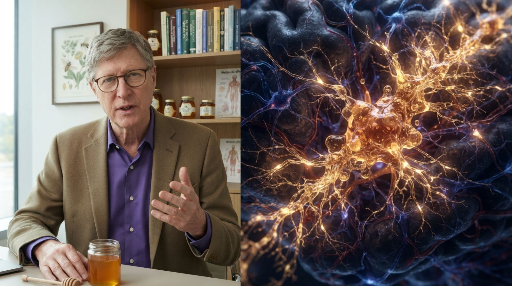

A fost dezvăluit trucul cu miere pentru pierderea memoriei, ascuns de marile companii
O descoperire uimitoare se răspândește în țara noastră. Un neurochirurg de renume mondial, care a examinat creierele a mii de oameni, a dezvăluit ceea ce industria farmaceutică a ascuns timp de decenii. Iar ceea ce veți vedea în videoclip vă va schimba pentru totdeauna perspectiva asupra pierderii memoriei.

Mulți dintre noi cunosc aceste mici momente de uitare. Un nume, o cheie, o propoziție neterminată — iar câteva minute mai târziu totul revine la locul său.
Însă o notiță neobișnuită din bucătărie a îndreptat atenția în altă direcție. Conținea trei ingrediente complet obișnuite, iar al treilea a făcut povestea cu adevărat interesantă. Miere
Când neurochirurgul și-a făcut publică descoperirea, reacția negativă a fost imediată. Videoclipurile i-au fost eliminate. Conturile i-au fost șterse. A fost contactat de avocați. Marile companii farmaceutice au făcut totul pentru a opri răspândirea acestor informații.
De ce atâta panică? Dacă oamenii ar cunoaște adevărul, nimeni nu ar mai cumpăra medicamente scumpe care tratează doar simptomele, niciodată cauza. O soluție naturală care nu poate fi brevetată ar lua miliarde de la industria farmaceutică.
Ce conține exact videoclipul?
Înainte să fie redus definitiv la tăcere, neurochirurgul a înregistrat un videoclip detaliat. În el explică adevărata cauză a declinului cognitiv — surprinzător de diferită de ceea ce credeați — și ritualul simplu de dimineață care trebuie făcut zilnic pentru ca creierul să își păstreze întreaga capacitate. Este vorba despre un ingredient natural folosit de secole într-un loc unde boala Alzheimer este aproape necunoscută.